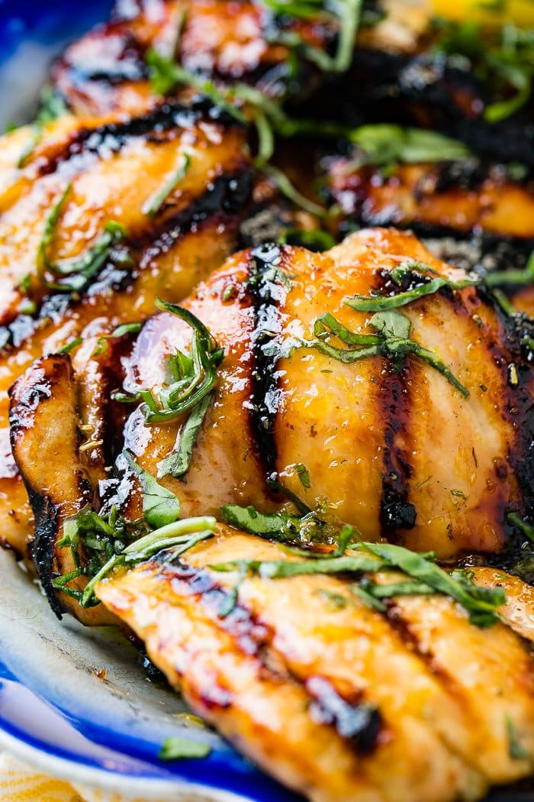

Grilled Honey Lemon Basil Chicken
Prep Time:
1 hour
Cook Time:
12 mins
Total Time:
1 hour 12 mins
Yield:
6 Servings
Ingredients
6 Chicken Thighs Boneless
54 g Olive Oil
Zest of 1 lemon
61 g Lemon Juice Fresh
113 g Honey
1 Teaspoon Chicken Seasoning
6 g Basil Chiffonade, Fresh
Steps
Whisk together the oil, zest, lemon juice, honey, chicken seasoning and place in a large glass dish.
Remove a couple of tablespoons to a bowl.
Add the chicken thighs to the glass dish and turn over in the marinade.
Cover with plastic wrap and place in the fridge for 30 minutes or up to 3 hours.
Heat the grill to medium heat and place the thighs on the grill.
Cook for 4-6 minutes and then turn over.
Baste the chicken with the small bowl of the unused marinade and cook an additional 4-6 minutes.
Remove to a platter and tent with foil.
Allow to rest for 3-5 minutes and then serve with the basil sprinkled over.
Notes
Grilled chicken can be frozen for 1 month.
Gallery

MENU